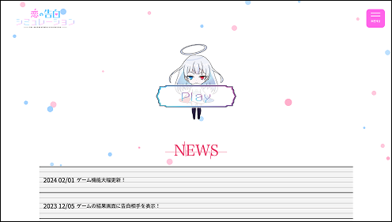
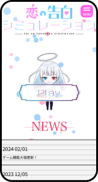

恋の告白シミュレーション ｜公式サイト
担当範囲：企画 / デザイン / コーディング / サイト運用
この作品は、恋愛に関心を持つ中高生をターゲットに、 キャラクター・時間・シチュエーションを選択しながら、 さまざまな告白シーンを体験できる 恋愛シミュレーションゲームです。
Webサイトは「青春」をテーマに、 赤と青をメインカラーとしたポップなデザインにしました。 初めて訪れたユーザーでもゲームへ迷わず移動できるよう、 情報の配置や導線設計を意識しています。
また、SNSで作品を共有できる機能を取り入れ、 プレイ後に友人同士で作品を楽しめる設計を目指しました。
このサイトを見る →ゲームへの導線設計
ファーストビュー付近にキャラクターと 「PLAY」ボタンを大きく配置し、 サイトを訪れたユーザーが迷わずゲームへ進める 導線を設計しました。 作品の世界観を感じてもらいながら、 自然にゲーム開始へつながるよう、 視線の流れやボタンの配置を意識しています。
工夫したポイント
- 01 視線を集めるキャラクター配置
- 02 初めて訪れたユーザーでも迷わない導線
- 03 世界観と操作性を両立したデザイン
キャラクター切り替え機能
キャラクターの表情差分をクリックすると、 立ち絵とボイスが連動して切り替わる機能を実装しました。 ユーザー自身が操作しながらキャラクターの 表情や声を楽しめるようにすることで、 作品への興味や没入感を高めることを意識しています。
工夫したポイント
- 01 直感的に操作できる切り替え
- 02 立ち絵とボイスを連動
- 03 キャラクターの個性を伝える演出
SNSシェア機能
XとLINEから作品を共有できる シェア機能を実装しました。 ゲームをプレイしたユーザーが友人へ 簡単に作品を共有できるようにすることで、 作品をきっかけとしたコミュニケーションや 新しいユーザーへの拡散につながることを意識しました。
工夫したポイント
- 01 身近なSNSへの共有
- 02 少ない操作でシェア可能
- 03 プレイ後のコミュニケーションを意識
レスポンシブ対応
PCだけでなくスマートフォンでも 快適に閲覧・操作できるよう、 画面幅に合わせてレイアウトや文字サイズ、 ボタンなどを調整しました。 使用する端末に左右されず、 作品を楽しめる設計を意識しています。
工夫したポイント
- 01 スマートフォンでの閲覧を重視
- 02 タップしやすいUI設計
- 03 端末ごとにレイアウトを最適化